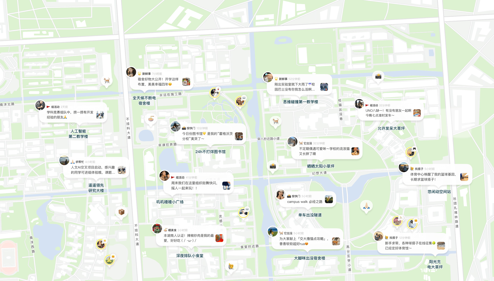
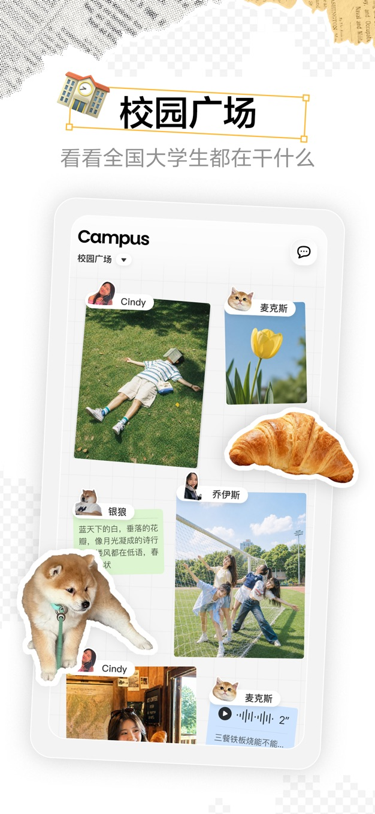

把校园搬上一张地图：Campus 能做什么、好用在哪、短板在哪
深度盘点 Campus 的地图社交体系——从冒泡发帖到找搭子，从校园认证到隐私边界，一个给在校大学生的轻量社交应用全景扫描。
开头：这张地图到底是什么
很多大学都有过「想找个伴儿吃饭却不知道谁在」「想问个课程作业的思路又怕打扰室友」「看见校园里有趣的事却没人分享」的时刻。Campus官网 上对这个产品的定位写得清楚——用一张地图来回答这些场景。它不做即时通讯、不做朋友圈、不做陌生人社交，而是把校园里正在发生的事、想找人一起做的事、值得看一眼的瞬间，全部钉在一张以学校为边界的地图上。
这件事听起来简单，但真正做起来需要一整套设计：怎么让新人顺利进来、怎么让冒泡不变成刷屏、怎么让找搭子的人正好对上、怎么守住隐私不踩雷。本文从四个能力域出发，对 Campus 做一次系统性的能力盘点，覆盖它做得好的地方、做得一般的地方，以及什么样的人真的能用上它。

能力域一：入场机制——手机号验证码即登录
任何社交产品的第一道坎都是「怎么让用户不费力气进来」。Campus 的选择是极简的：手机号加短信验证码，没有密码，没有第三方授权，验证码通过即自动建号。
这个设计的亮点在于把「注册」和「登录」合并成了同一件事。用户不会在「我是新用户还是老用户」这个问题上打转，输入号码、收到短信、填上、进来——四步完成。对于大学生群体来说，手机号基本是随身必备，验证码也不依赖额外工具，整个流程的摩擦极低。
与之配套的是账号规则的明确边界：账号仅限本人，不得出借转让；昵称头像要真实合规，不能冒充机构或他人；批量注册、频繁注册是红线。协议里写得清楚，违规的后果也提前告知——这一点比很多同类产品开场就给人安全感。
换手机号是这套机制里唯一真正需要注意的点。旧号被运营商回收后，新持有者可以用验证码登录原账号，所以换号前记得先在应用内完成换绑，这不是可选项而是必做项。
能力域二：地图上留痕——三种形态 + 七个主题
进来之后，真正的核心玩法是「往地图上冒泡」。Campus 提供了三种发布形态并列：纯文字、相机、语音。不用纠结，想发什么就用什么。
比形态更有意思的是主题体系。活动、新鲜事、找搭子、出闲置、按快门、它出没、求助——这七个主题不是随便拍脑袋想出来的，而是对应校园生活里最常见的七类场景。主题决定了你的气泡会被谁看到，一个「期末抱佛脚求搭子」选对主题、钉对位置，能同时被同校、同楼层、同需求的人看见，回应率自然高。
发布四步走顺之后，其实每一次冒泡都是重复动作。真正值得在发布前过一遍的三个自检：内容原创吗、有没有带别人隐私、主题和位置对不对得上。这三条不是官方教条，而是实际体验下来能避免 80% 尴尬的实用守则。

能力域三：找搭子——地图机制送给轻社交的红利
搭子这个概念本身不新鲜，但 Campus 把搭子社交做成了地图机制的天然延伸。饭搭子钉在食堂、自习搭子钉在图书馆、运动搭子钉在操场，位置即筛选条件——扫地图的人看到的气泡就是此刻想去这个地方的人，供需直接对上，中间没有「刷列表」那道障碍。
一条合格的搭子帖，时间、事项、地点、状态四要素缺一不可。「周三晚上七点到九点，文科图书馆三楼，期末抱佛脚，求一个安静型搭子」比「有人一起自习吗」高出不止一个量级的回应率。写完发布之后，私聊对细节、成局就删帖、第一次线下选公共场所——这条操作链路覆盖了搭子社交从发起、成局到收尾的全过程。
想找长期组织而不是临时搭子的用户，社团招新类的活动气泡更合适。活动与搭子的差别在于有没有固定组织，Campus 的个人资料卡里还有社团标签这个玩法，把身份认同和社交圈绑定在一起。
能力域四：校园卡——应用内的电子纪念卡
下载 页那句「扫码下载 Campus App，领取你的校园卡」经常让新生困惑：这是不是学校的一卡通？答案是否定的。Campus 的校园卡不是支付工具、不是门禁凭证，而是应用内的一个身份认同元素——类似数字校徽，进了某所学校的圈层就自动获得一张该校主题的电子卡。
这个设计的意义在于仪式感。把「选校、认证」的流程包装成「领卡」，让新用户有入学般的代入感，也为应用内的个性表达体系（手帐主页、贴纸相机）提供了一个基础素材。官方没有展开玩法细节，Campus文档 里对各功能的说明更系统，但从现有形态来看，它更像一个入门仪式而非核心功能。
短板也要说
盘点了做得好的地方，也要客观指出 Campus 的局限。
第一，地图是它的核心也是它的天花板。圈层边界非常清晰——同校、同校区才会互看，但这意味着离开校园后产品的价值就快速衰减。寒暑假、实习期间、毕业之后，地图上的气泡密度会不会骤降，是一个没有答案的问题。
第二，核心玩法的深度还在早期。发帖、冒泡、找搭子都是单次行为，没有长期的内容沉淀机制。一条气泡 24 小时之后还在不在、如何归档、有没有结构化的话题标签让内容可检索，这些都是空白。作为对比，很多同类产品在内容消费侧已经做了时间线和话题聚合，Campus 的地图模型还没补齐这块。
第三，社交关系弱。搭子是轻关系，成局就散，产品本身不鼓励从搭子走向好友，也没有「关注」「粉丝」这样的关系链设计。对于需要建立长期社交连接的人来说，Campus 可能不够用，最终还是会回到微信或 QQ。
第四，依赖手机号的账号体系在隐私层面有先天局限。手机号是强标识符，与真实身份绑定，虽然 Campus 不对外展示手机号，但整个账号的基础锚点仍然是可追溯的。在意这点的用户需要自行权衡。
什么样的人该用它
综合以上能力与局限，三类人群最能从 Campus 里得到价值：
刚入学的新生。对校园还不熟悉、想快速找到同好、需要在陌生环境里建立最低限度的社交连接。地图的位置信息能帮他们迅速发现「原来同楼层也有人在找自习搭子」「原来食堂三楼中午人最多」，这种基于地点的发现比纯文字列表高效得多。
有固定场景需求的在校生。期末想找安静的自习搭子、周末想组一个羽毛球局、社团想宣传一场线下活动——只要需求是「带地点、带时间、想找人一起」，Campus 的地图气泡就是一个精准的发布渠道。
对轻社交有偏好的用户。不想维护好友列表、不想刷朋友圈、只想在某个特定时刻找到同行的人。搭子文化本身就与 Campus 的产品气质高度吻合——轻、即时、场景化，不需要深度社交，也不会消耗太多精力。
不适合的人群也很明确：想要深度内容消费、想要长期关系沉淀、想要跨圈层社交的用户，在 Campus 里大概率找不到期待的东西。它从一开始就没打算做这些。
一句话总结
Campus 是一个把「校园里正在发生什么」这件事搬到地图上的尝试。它的核心价值清晰：让同校的人基于地点和需求快速对上号，而不需要绕一圈社交关系链。入场极简、场景明确、搭子高效，但天花板也很明显——离开校园地图就失去意义，内容深度和关系沉淀都还没起步。对在校大学生来说，它可能是手机里众多 App 中一个「想起时就能用上」的轻量工具，而非每天必刷的主阵地。关于这套资料的完整整理，在 GitHub、Gitee、GitCode 三个仓库都能拿到，方便不同网络环境的用户查看。